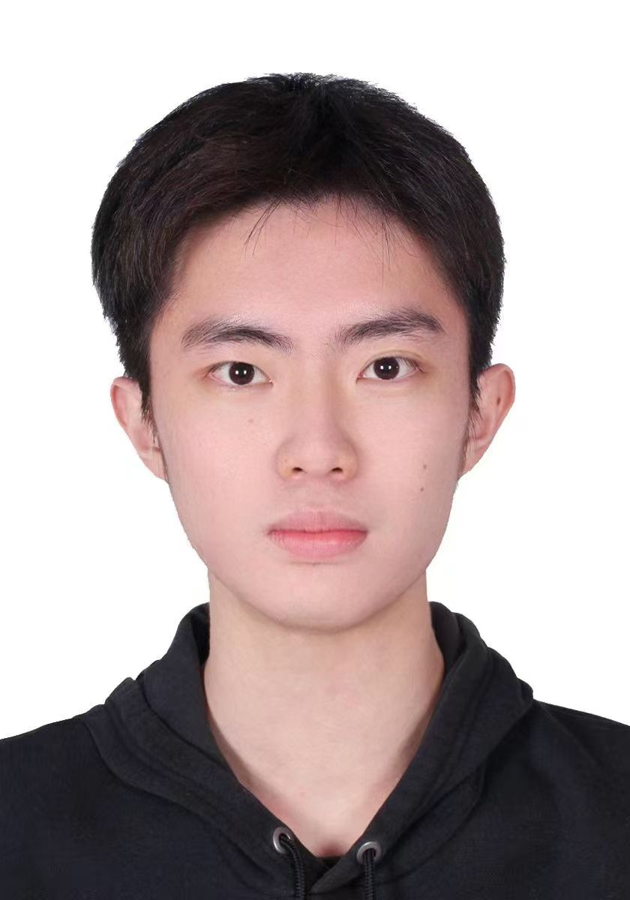
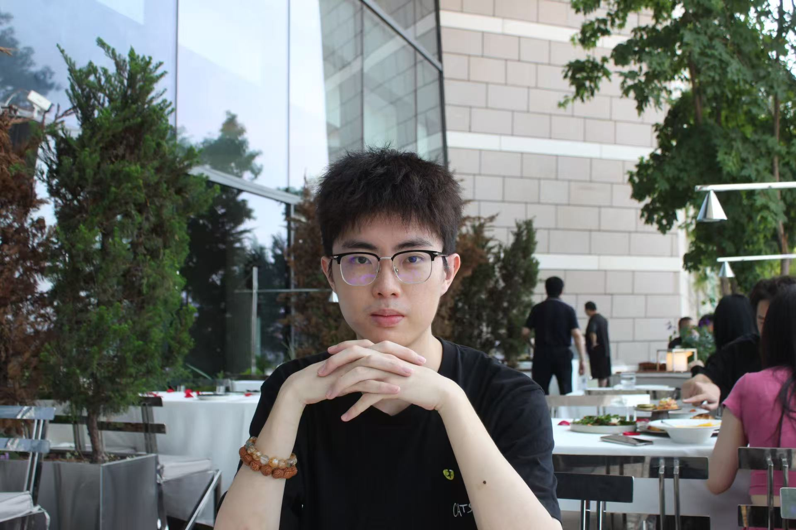

ABOUT ME
关于我

我叫 Ma Aozun，英文名 Eason， 是香港恒生大学一名 Finance and Banking 的大四学生。 一边沉下心啃专业知识、参与实习实践，一边尽力把日子过得松弛丰富，喜欢参加志愿活动。
平时习惯平衡学习与生活，不喜欢过度紧绷，相信持续的小积累远胜过一时的冲刺。 空闲的时候我喜欢 Citywalk、爬山散心，也会安静看书、健身，在动静之间找到自己舒服的节奏。

SKILLS & HOBBIES
专业与专长
点一个板块，它会放大到整个页面慢慢讲给你听。
FINANCE 101
金融小课堂
我准备了 30 个金融、经济与股票的小知识，每次进来随机发 6 张牌 —— 点一下卡片就翻过来。
DAILY CARDS
随机抽取一张我的档案卡
技能、星座、MBTI 与生活兴趣混在同一副牌里，抽一张，再侧面认识我。抽过的卡会摆在右边，不会重复。
EASON'S DECK
还剩 6 张档案卡
已经抽过 0 次
抽到的卡都会摆在这里
点击小卡可以重新查看详情
DREAM TIMELINE
逐梦目标｜沿着时间奔赴远方
移动鼠标看看这支箭——它会射进屏幕深处。点节点看每个阶段的详细遐想。
PHOTO ALBUM
照片分享
点一个相册进去看看，每个相框都有自己的脾气。
MOOD RADIO
心情电台｜今天的歌与天气
CLOUD MUSIC
心墙
林俊杰
把《心墙》的音频文件命名为 xinqiang.mp3 放进 images 文件夹，播放器就能唱歌啦。
📍香港 加载中…
实时天气--°
最高 --° · 最低 --°
逐小时预报
体感
--°
湿度
--%
风速
-- km/h
2026年10月
MESSAGE WALL
留言墙
留下你的足迹，每一张便签都是一份温暖。
CONTACT
联系我
如果想交流、或者只是打个招呼，欢迎给我发送邮件。
（悄悄告诉你：把鼠标凑到两边的烟花上，会有惊喜）